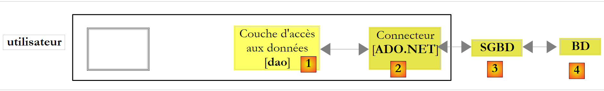
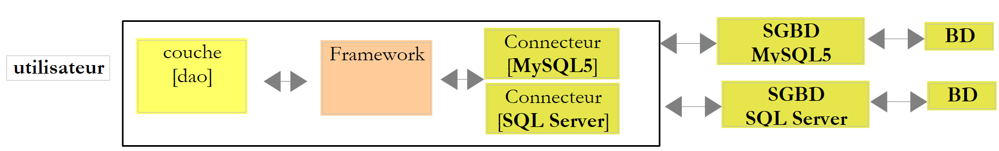
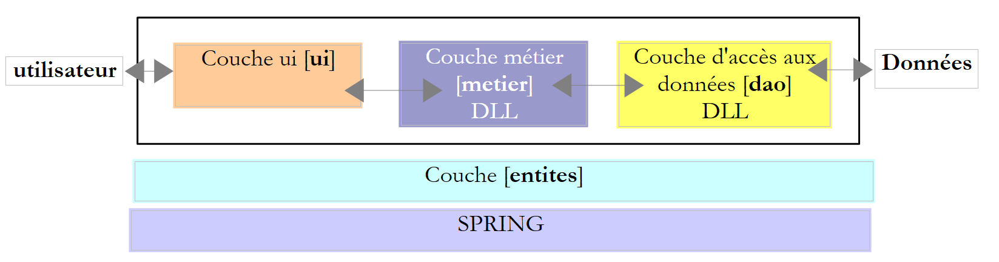
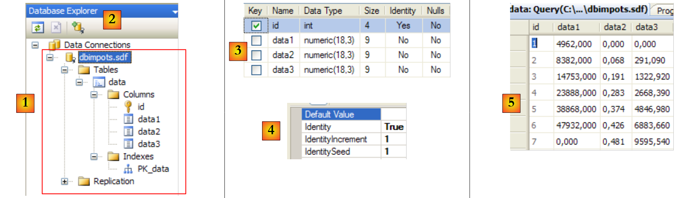

9. Accès aux bases de données
9.1. Connecteur ADO.NET
Reprenons l'architecture en couches utilisée à diverses reprises
 |
Dans les exemples étudiés, la couche [dao] a pour l'instant exploité deux types de sources de données :
- des données placées en dur dans le code
- des données provenant de fichiers texte
Nous étudions dans ce chapitre le cas où les données proviennent d'une base de données. L'architecture 3 couches évolue alors vers une architecture multi-couches. Il en existe diverses. Nous allons étudier les concepts de base avec la suivante :
 |
Dans le schéma ci-dessus, la couche [dao] [1] dialogue avec le SGBD [3] au travers d'une bibliothèque de classes propre au SGBD utilisé et livrée avec lui. Cette couche implémente des fonctionnalités standard réunies sous le vocable ADO (Active X Data Objects). On appelle une telle couche, un provider (fournisseur d'accès à une base de données ici) ou encore connecteur. La plupart des SGBD disposent désormais d'un connecteur ADO.NET, ce qui n'était pas le cas aux débuts de la plate-forme .NET. Les connecteurs .NET n'offrent pas une interface standard à la couche [dao], aussi celle-ci a-t-elle dans son code le nom des classes du connecteur. Si on change de SGBD, on change de connecteur et de classes et il faut alors changer la couche [dao]. C'est à la fois une architecture performante parce le connecteur .NET ayant été écrit pour un SGBD particulier sait utiliser au mieux celui-ci et rigide car changer de SGBD implique de changer la couche [dao]. Ce deuxième argument est à relativiser : les entreprises ne changent pas de SGBD très souvent. Par ailleurs, nous verrons ultérieurement que depuis la version 2.0 de .NET, il existe un connecteur générique qui amène de la souplesse sans sacrifier la performance.
9.2. Les deux modes d'exploitation d'une source de données
La plate-forme .NET permet l'exploitation d'une source de données de deux manières différentes :
- mode connecté
- mode déconnecté
En mode connecté, l'application
- ouvre une connexion avec la source de données
- travaille avec la source de données en lecture/écriture
- ferme la connexion
En mode déconnecté, l'application
- ouvre une connexion avec la source de données
- obtient une copie mémoire de tout ou partie des données de la source
- ferme la connexion
- travaille avec la copie mémoire des données en lecture/écriture
- lorsque le travail est fini, ouvre une connexion, envoie les données modifiées à la source de données pour qu'elle les prenne en compte, ferme la connexion
Nous n'étudions ici que le mode connecté.
9.3. Les concepts de base de l'exploitation d'une base de données
Nous allons exposer les principaux concepts d'utilisation d'une base de données avec une base de données SQL Server Compact 3.5. Ce SGBD est livré avec Visual Studio Express. C'est un SGBD léger qui ne sait gérer qu'un utilisateur à la fois. Il est cependant suffisant pour introduire la programmation avec les bases de données. Ultérieurement, nous présenterons d'autres SGBD.
L'architecture utilisée sera la suivante :
 |
Une application console [1] exploitera une base de données de type SqlServer Compact [3,4] via le connecteur Ado.Net de ce SGBD [2].
9.3.1. La base de données exemple
Nous allons construire la base de données directement dans Visual studio Express. Pour cela, nous créons un nouveau projet de type console.
 |
- [1] : le projet
- [2] : on ouvre une vue "Explorateur de bases de données"
- [3] : on crée une nouvelle connexion
 |
- [4] : on sélectionne le type du SGBD
- [5,6] : on choisit le SGBD SQL Server Compact
- [7] : on crée la base de données
- [8] : une base de données SQL Server Compact est encapsulée dans un unique fichier de suffixe .sdf. On indique où la créer, ici dans le dossier du projet C#.
- [9] : on a donné le nom [dbarticles.sdf] à la nouvelle base
- [10] : on sélectionne la langue française. Cela a une conséquence sur les opérations de tri.
- [11,12] : la base de données peut être protégée par un mot de passe. Ici "dbarticles".
- [13] : on valide la page de renseignements. La base va être physiquement créée :
 |
- [14] : le nom de la base qui vient d'être créée
- [15] : on coche l'option "Save my password" afin de ne pas avoir à le retaper à chaque fois
- [16] : on vérifie la connexion
- [17] : tout va bien
- [18] : on valide la page d'informations
- [19] : la connexion apparaît dans l'explorateur de bases de données
- [20] : pour l'instant la base est sans tables. On en crée une. Un article aura les champs suivants :
- id : un identifiant unique - clé primaire
- nom : nom de l'article - unique
- prix : prix de l'article
- stockactuel : son stock actuel
- stockminimum : le stock minimum en-deça duquel il faut réapprovisionner l’article
 |
- [21] : le champ [id] est de type entier et est clé primaire [22] de la table.
- [23] : cette clé primaire est de type Identity. Cette notion propre aux SGBD SQL Server indique que la clé primaire sera générée par le SGBD lui-même. Ici la clé primaire sera un nombre entier commençant à 1 et incrémenté de 1 à chaque nouvelle clé.
 |
- [24] : les autres champs sont créés. On notera que le champ [nom] a une contrainte d'unicité [25].
- [26] : on donne un nom à la table
- [27] : après avoir validé la structure de la table, celle-ci apparaît dans la base.
 |
- [28] : on demande à voir le contenu de la table
- [29] : elle est vide pour l'instant
- [30] : on la remplit avec quelques données. Une ligne est validée dès qu'on passe à la saisie de la ligne suivante. Le champ [id] n'est pas saisi : il est généré automatiquement lorsque la ligne est validée.
Il nous reste à configurer le projet pour que cette base qui est actuellement à la racine du projet soit recopiée automatiquement dans le dossier d'exécution du projet :
 |
- [1] : on demande à voir tous les fichiers
- [2] : la base [dbarticles.sdf] apparaît
- [3] : on l'inclut dans le projet
 |
- [4] : l'opération d'ajout d'une source de données dans un projet lance un assistant dont nous n'avons pas besoin ici [5].
- [6] : la base fait maintenant partie du projet. On revient en mode normal [7].
- [8] : le projet avec sa base
- [9] : dans les propriétés de la base, on peut voir [10] que celle-ci sera automatiquement recopiée dans le dossier d'exécution du projet. C'est là que le programme que nous allons écrire, ira la chercher.
Maintenant que nous avons une base de données disponible, nous allons pouvoir l'exploiter. Auparavant, nous faisons quelques rappels SQL.
9.3.2. Les quatre commandes de base du langage SQL
SQL (Structured Language Query) est un langage, partiellement normalisé, d'interrogation et de mise à jour des bases de données. Tous les SGBD respectent la partie normalisée de SQL mais ajoutent au langage des extensions propriétaires qui exploitent certaines particularités du SGBD. Nous en avons déjà rencontré deux exemples : la génération automatique des clés primaires et les types autorisés pour les colonnes d'une table sont souvent dépendants du SGBD.
Les quatre commandes de base du langage SQL que nous présentons sont normalisées et acceptées par tous les SGBD :
| La requête qui permet d'obtenir les données contenues dans une base. Seuls les mots clés de la première ligne sont obligatoires, les autres sont facultatifs. Il existe d’autres mots clés non présentés ici. • Une jointure est faite avec toutes les tables qui sont derrière le mot clé from • Seules les colonnes qui sont derrière le mot clé select sont conservées • Seules les lignes vérifiant la condition du mot clé where sont conservées • Les lignes résultantes ordonnées selon l’expression du mot clé order by forment le résultat de la requête. Ce résultat est une table. |
| Insère une ligne dans table. (col1, col2, ...) précise les colonnes de la ligne à initialiser avec les valeurs (val1, val2, ...). |
| Met à jour les lignes de table vérifiant condition (toutes les lignes si pas de where). Pour ces lignes, la colonne coli reçoit la valeur vali |
| Supprime toutes les lignes de table vérifiant condition |
Nous allons écrire une application console permettant d'émettre des ordres SQL sur la base [dbarticles] que nous avons créée précédemment. Voici un exemple d'exécution. Le lecteur est invité à comprendre les ordres SQL émis et leurs résultats.
- ligne 1 : la chaîne dite de connexion : elle contient tous les paramètres permettant de se connecter à la base de données.
- ligne 3 : on demande le contenu de la table [articles]
- ligne 16 : on insère une nouvelle ligne. On notera que le champ id n'est pas initialisé dans cette opération car c'est le SGBD qui va générer la valeur de ce champ.
- ligne 19 : vérification. Ligne 28, la ligne a bien été ajoutée.
- ligne 30 : on augmente de 10% le prix de l'article qui vient d'être ajouté.
- ligne 33 : on vérifie
- ligne 42 : l'augmentation du prix a bien eu lieu
- ligne 44 : on supprime l'article qu'on a ajouté précédemment
- ligne 47 : on vérifie
- lignes 53-55 : l'article n'est plus là.
9.3.3. Les interfaces de base d'ADO.NET pour le mode connecté
Revenons au schéma d'une application exploitant une base de données au travers d'un connecteur ADO.NET :
 |
En mode connecté, l'application :
- ouvre une connexion avec la source de données
- travaille avec la source de données en lecture/écriture
- ferme la connexion
Trois interfaces ADO.NET sont principalement concernées par ces opérations :
- IDbConnection qui encapsule les propriétés et méthodes de la connexion.
- IDbCommand qui encapsule les propriétés et méthodes de la commande SQL exécutée.
- IDataReader qui encapsule les propriétés et méthodes du résultat d'un ordre SQL Select.
L'interface IDbConnection
Sert à gérer la connexion avec la base de données. Les méthodes M et propriétés P de cette interface que nous utiliserons seront les suivantes :
Nom | Type | Rôle |
| P | chaîne de connexion à la base. Elle précise tous les paramètres nécessaires à l'établissement de la connexion avec une base précise. |
| M | ouvre la connexion avec la base définie par ConnectionString |
| M | ferme la connexion |
| M | démarre une transaction. |
| P | état de la connexion : ConnectionState.Closed, ConnectionState.Open, ConnectionState.Connecting, ConnectionState.Executing, ConnectionState.Fetching, ConnectionState.Broken |
Si Connection est une classe implémentant l'interface IDbConnection, l'ouverture de la connexion peut se faire comme suit :
L'interface IDbCommand
Sert à exécuter un ordre SQL ou une procédure stockée. Les méthodes M et propriétés P de cette interface que nous utiliserons seront les suivantes :
Nom | Type | Rôle |
| P | indique ce qu'il faut exécuter - prend ses valeurs dans une énumération : - CommandType.Text : exécute l'ordre SQL défini dans la propriété CommandText. C'est la valeur par défaut. - CommandType.StoredProcedure : exécute une procédure stockée dans la base |
| P | - le texte de l'ordre SQL à exécuter si CommandType= CommandType.Text - le nom de la procédure stockée à exécuter si CommandType= CommandType.StoredProcedure |
| P | la connexion IDbConnection à utiliser pour exécuter l'ordre SQL |
| P | la transaction IDbTransaction dans laquelle exécuter l'ordre SQL |
| P | la liste des paramètres d'un ordre SQL paramétré. L'ordre update articles set prix=prix*1.1 where id=@id a le paramètre @id. |
| M | pour exécuter un ordre SQL Select. On obtient un objet IDataReader représentant le résultat du Select. |
| M | pour exécuter un ordre SQL Update, Insert, Delete. On obtient le nombre de lignes affectées par l'opération (mises à jour, insérées, détruites). |
| M | pour exécuter un ordre SQL Select ne rendant qu'un unique résultat comme dans : select count(*) from articles. |
| M | pour créer les paramètres IDbParameter d'un ordre SQL paramétré. |
| M | permet d'optimiser l'exécution d'une requête paramétrée lorsqu'elle est exécutée de multiples fois avec des paramètres différents. |
Si Command est une classe implémentant l'interface IDbCommand, l'exécution d'un ordre SQL sans transaction aura la forme suivante :
L'interface IDataReader
Sert à encapsuler les résultats d'un ordre SQL Select. Un objet IDataReader représente une table avec des lignes et des colonnes, qu'on exploite séquentiellement : d'abord la 1ère ligne, puis la seconde, .... Les méthodes M et propriétés P de cette interface que nous utiliserons seront les suivantes :
Nom | Type | Rôle |
| P | le nombre de colonnes de la table IDataReader |
| M | GetName(i) rend le nom de la colonne n° i de la table IDataReader. |
| P | Item[i] représente la colonne n° i de la ligne courante de la table IDataReader. |
| M | passe à la ligne suivante de la table IDataReader. Rend le booléen True si la lecture a pu se faire, False sinon. |
| M | ferme la table IDataReader. |
| M | GetBoolean(i) : rend la valeur booléenne de la colonne n° i de la ligne courante de la table IDataReader. Les autres méthodes analogues sont les suivantes : GetDateTime, GetDecimal, GetDouble, GetFloat, GetInt16, GetInt32, GetInt64, GetString. |
| M | Getvalue(i) : rend la valeur de la colonne n° i de la ligne courante de la table IDataReader en tant que type object. |
| M | IsDBNull(i) rend True si la colonne n° i de la ligne courante de la table IDataReader n'a pas de valeur ce qui est symbolisé par la valeur SQL NULL. |
L'exploitation d'un objet IDataReader ressemble souvent à ce qui suit :
9.3.4. La gestion des erreurs
Revenons sur l'architecture d'une application avec base de données :
 |
La couche [dao] peut rencontrer de nombreuses erreurs lors de l'exploitation de la base de données. Celles-ci vont être remontées en tant qu'exceptions lancées par le connecteur ADO.NET. Le code de la couche [dao] doit les gérer. Toute opération avec la base de données doit se faire dans un try / catch / finally pour intercepter et gérer une éventuelle exception et libérer les ressources qui doivent l'être. Ainsi le code vu plus haut pour exploiter le résultat d'un ordre Select devient le suivant :
Quoiqu'il arrive, les objets IDataReader et IDbConnection doivent être fermés. C'est pourquoi cette fermeture est faite dans les clauses finally.
La fermeture de la connexion et celle du de l'objet IDataReader peuvent être automatisées avec une clause using :
- Ligne 3, la clause using nous assure que la connexion ouverte dans le bloc using(...){...} sera fermée en-dehors de celui-ci, ceci quelque soit la façon dont on sort du bloc : normalement ou par l'arrivée d'une exception. On économise un finally, mais l'intérêt n'est pas dans cette économie mineure. L'utilisation d'un using évite au développeur de fermer lui-même la connexion. Or oublier de fermer une connexion peut passer inaperçu et "planter" l'application d'une façon qui apparaîtra aléatoire, à chaque fois que le SGBD atteindra le nombre maximum de connexions ouvertes qu'il peut supporter.
- Ligne 11 : on procède de façon analogue pour fermer l'objet IDataReader.
9.3.5. Configuration du projet exemple
Le projet final sera le suivant :
 |
- [1] : le projet aura un fichier de configuration [App.config]
- [2] : il utilise des classes de deux DLL non référencées par défaut et qu'il faut don ajouter aux références du projet :
- [System.Configuration] pour exploiter le fichier de configuration [App.config]
- [System.Data.SqlServerCe] pour exploiter la base de données Sql Server Compact
- [3, 4] : rappellent comment ajouter des références à un projet.
- [5, 6] : rappellent comment ajouter le fichier [App.config] à un projet.
Le fichier de configuration [App.config] sera le suivant :
- lignes 3-5 : la balise <connectionStrings> au pluriel définit des chaînes de connexion à des bases de données. Une chaîne de connexion à la forme "paramètre1=valeur1;paramètre2=valeur2;...". Elle définit tous les paramètres nécessaires à l'établissement d'une connexion avec une base de données particulière. Ces chaînes de connexion changent avec chaque SGBD. Le site [http://www.connectionstrings.com/] donne la forme de celles-ci pour les principaux SGBD.
- ligne 4 : définit une chaîne de connexion particulière, ici celle de la base SQL Server Compact dbarticles.sdf que nous avons créée précédemment :
- name = nom de la chaîne de connexion. C'est via ce nom qu'une chaîne de connexion est récupérée par le programme C#
- connectionString : la chaîne de connexion pour une base SQL Server Compact
- DataSource : désigne le chemin de la base. La syntaxe |DataDirectory| désigne le dossier d'exécution du projet.
- Password : le mot de passe de la base. Ce paramètre est absent s'il n'y a pas de mot de passe.
Le code C# pour récupérer la chaîne de connexion précédente est le suivant :
- ConfigurationManager est la classe de la DLL [System.Configuration] qui permet d'exploiter le fichier [App.config].
- ConnectionsStrings["nom"].ConnectionString : désigne l'attribut connectionString de la balise < add name="nom" connectionString="..."> de la section <connectionStrings> de [App.config]
Le projet est désormais configuré. Nous étudions maintenant la classe [Program.cs] dont nous avons vu précédemment un exemple d'exécution.
9.3.6. Le programme exemple
Le programme [program.cs] est le suivant :
- lignes 1-6 : les espaces de nom utilisés dans l'application. La gestion d'une base de données SQL Server Compact nécessite l'espace de noms [System.Data.SqlServerCe] de la ligne 3. On a là une dépendance sur un espace de noms propriétaire à un SGBD. On peut en déduire que le programme devra être modifié si on change de SGBD.
- ligne 18 : la chaîne de connexion à la base est lue dans le fichier [App.config] et affichée ligne 25. Elle servira pour l'établissement d'une connexion avec la base de données.
- lignes 28-32 : un dictionnaire mémorisant les noms des quatre ordres SQL autorisés : select, insert, update, delete.
- lignes 40-62 : la boucle de saisie des ordres SQL tapés au clavier et leur exécution sur la base de données
- ligne 48 : la ligne tapée au clavier est décomposée en champs afin d'en connaître le premier terme qui doit être : select, insert, update, delete
- lignes 50-55 : si la requête est invalide, un message d'erreur est affiché et on passe à la requête suivante.
- lignes 57-61 : on exécute l'ordre SQL saisi. Cette exécution prend une forme différente selon que l'on a affaire à un ordre select ou à un ordre insert, update, delete. Dans le premier cas, l'ordre ramène des données de la base sans modifier celle-ci, dans le second il la met à jour sans ramener des données. Dans les deux cas, on délègue l'exécution à une méthode qui a besoin de deux paramètres :
- la chaîne de connexion qui va lui permettre de se connecter à la base
- l'ordre SQL à exécuter sur cette connexion
9.3.7. Exécution d'une requête SELECT
L'exécution d'ordres SQL nécessite les étapes suivantes :
- Connexion à la base de données
- Émission des ordres SQL vers la base
- Traitement des résultats de l'ordre SQL
- Fermeture de la connexion
Les étapes 2 et 3 sont réalisées de façon répétée, la fermeture de connexion n’ayant lieu qu’à la fin de l’exploitation de la base. Les connexions ouvertes sont des ressources limitées d'un SGBD. Il faut les économiser. Aussi cherchera-t-on toujours à limiter la durée de vie d'une connexion ouverte. Dans l'exemple étudié, la connexion est fermée après chaque ordre SQL. Une nouvelle connexion est ouverte pour l'ordre SQL suivant. L'ouverture / fermeture d'une connexion est coûteuse. Pour diminuer ce coût, certains SGBD offrent la notion de pools de connexions ouvertes : lors de l'initialisation de l'application, N connexions sont ouvertes et sont affectées au pool. Elles resteront ouvertes jusqu'à la fin de l'application. Lorsque l'application ouvre une connexion, elle reçoit l'une des N connexions déjà ouvertes du pool. Lorsqu'elle ferme la connexion, celle-ci est simplement remise dans le pool. L'intérêt de ce système est qu'il est transparent pour le développeur : le programme n'a pas à être modifié pour utiliser le pool de connexions. La configuration du pool de connexions est dépendant du SGBD.
Nous nous intéressons tout d'abord à l'exécution des ordres SQL Select. La méthode ExecuteSelect de notre programme exemple est la suivante :
- ligne 2 : la méthode reçoit deux paramètres :
- la chaîne de connexion [connectionString] qui va lui permettre de se connecter à la base
- l'ordre SQL Select [requête] à exécuter sur cette connexion
- ligne 4 : toute opération avec une base de données peut générer une exception qu'on peut vouloir gérer. C'est d'autant plus important ici que les ordres SQL donnés par l'utilisateur peuvent être syntaxiquement erronés. Il faut qu'on puisse le lui dire. Tout le code est donc à l'intérieur d'un try / catch.
- ligne 5 : il y a plusieurs choses ici :
- la connexion avec la base est initialisée avec la chaîne de connexion [connectionString]. Elle n'est pas encore ouverte. Elle le sera ligne 7.
- la clause using (Ressource) {...} est une facilité syntaxique garantissant la libération de la ressource Ressource, ici une connexion, à la sortie du bloc contrôlé par le using.
- la connexion est d'un type propriétaire : SqlCeConnection, propre au SGBD SQL Server Compact.
- ligne 7 : la connexion est ouverte. C'est à ce moment que les paramètres de la chaîne de connexion sont utilisés.
- ligne 9 : un ordre SQL est émis via un objet propriétaire SqlCeCommand. La ligne 9 initialise cet objet avec deux informations : la connexion à utiliser et l'ordre SQL à émettre dessus. L'objet SqlCeCommand sert aussi bien à exécuter un ordre Select qu'un ordre Update, Insert, Delete. Ses propriétés et méthodes ont été présentées page 234.
- ligne 10 : un ordre SQL Select est exécuté via la méthode ExecuteReader de l'objet SqlCeCommand qui rend un objet IDataReader dont a présenté les méthodes et propriétés page 235.
-
ligne 12 : l'affichage des résultats est confiée à la méthode AfficheReader suivante :
-
ligne 2 : la méthode reçoit un objet IDataReader. On notera qu'ici nous avons utilisé une interface et non une classe spécifique.
- ligne 3 : la clause using est utilisée pour gérer de façon automatique la fermeture de l'objet IDataReader.
- lignes 8-10 : on affiche les noms des colonnes de la table résultat du Select. Ce sont les colonnes coli de la requête select col1, col2, ... from table ...
- lignes 14-21 : on parcourt la table des résultats et on affiche les valeurs de chaque ligne de la table.
- ligne 18 : on ne connaît pas le type de la colonne n° i du résultat parce qu'on ne connaît pas la table interrogée. On ne peut donc utiliser la syntaxe reader.GetXXX(i) où XXX est le type de la colonne n° i, car on ne connaît pas ce type. On utilise alors la syntaxe reader.Item[i].ToString() pour avoir la représentation de la colonne n° i sous forme de chaîne de caractères. La syntaxe reader.Item[i].ToString() peut être abrégée en reader[i].ToString().
9.3.8. Exécution d'un ordre de mise à jour : INSERT, UPDATE, DELETE
Le code de la méthode ExecuteUpdate est le suivant :
Nous avons dit que l'exécution d'un ordre d'interrogation Select ne différait de celle d'un ordre de mise à jour Update, Insert, Delete que par la méthode de l'objet SqlCeCommand utilisée : ExecuteReader pour Select, ExecuteNonQuery pour Update, Insert, Delete. Nous ne commentons que cette dernière méthode dans le code ci-dessus :
- ligne 10 : l'ordre Update, Insert, Delete est exécuté par la méthode ExecuteNonQuery de l'objet SqlCeCommand. Si elle réussit, cette méthode rend le nombre de lignes mises à jour (update) ou insérées (insert) ou détruites (delete).
- ligne 12 : ce nombre de lignes est affiché à l'écran
Le lecteur est invité à revoir un exemple d'exécution de ce code, page 232.
9.4. Autres connecteurs ADO.NET
Le code que nous avons étudié est propriétaire : il dépend de l'espace de noms [System.Data.SqlServerCe] destiné au SGBD SQL Server Compact. Nous allons maintenant construire le même programme avec différents connecteurs .NET et voir ce qui change.
9.4.1. Connecteur SQL Server 2005
L'architecture utilisée sera la suivante :
 |
L'installation de SQL Server 2005 est décrite en annexes au paragraphe 1.1, page 451.
Nous créons un second projet dans la même solution que précédemment puis nous créons la base de données SQL server 2005. Le SGBD SQL Server 2005 doit être lancé avant les opérations qui suivent :
 |
- [1] : créer un nouveau projet dans la solution actuelle et en faire le projet courant.
- [2] : créer une nouvelle connexion
- [3] : choisir le type de connexion
 |
- [4] : choisir le SGBD SQL Server
- [5] : résultat du choix précédent
- [6] : utiliser le bouton [Browse] pour indiquer où créer la base SQL Server 2005. La base de données est encapsulée dans un fichier .mdf.
- [7] : choisir la racine du nouveau projet et appeler la base [dbarticles.mdf].
- [8] : utiliser une authentification windows.
- [9] : valider la page de renseignements
 |
- [11] : la base SQL Server
- [12] : créer une table. Celle-ci sera identique à la base SQL Server Compact construite précédemment.
- [13] : le champ [id]
- [14] : le champ [id] est de type Identity.
- [15,16] : le champ [id] est clé primaire
 |
- [17] : les autres champs de la table
- [18] : donner le nom [articles] à la table au moment de sa sauvegarde (Ctrl+S).
Il nous reste à mettre des données dans la table :
 |  |
Nous incluons la base de données dans le projet :
 |
Les références du projet sont les suivantes :
 |
Le fichier de configuration [App.config] est le suivant :
- ligne 4 : la chaîne de connexion à la base [dbarticles.mdf] avec une authentification windows
- ligne 5 : la chaîne de connexion à la base [dbarticles.mdf] avec une authentification SQL Server. [sa,msde] est le couple (login,password) de l'administrateur du serveur SQL Server tel que défini au paragraphe 1.1, page 451.
Le programme [Program.cs] évolue de la façon suivante :
- ligne 1 : l'espace de noms [System.Data.SqlClient] contient les classes permettant de gérer une base SQL Server 2005
- ligne 24 : la connexion est de type SQLConnection
- ligne 28 : l'objet encapsulant les ordres SQL est de type SQLCommand
- ligne 47 : l'objet encapsulant le résultat d'un ordre SQL Select est de type SQLDataReader
Le code est identique à celui utilisé avec le SGBD SQL Server Compact au nom des classes près. Pour l'exécuter, on peut utiliser (ligne 11) l'une ou l'autre des deux chaînes de connexion définies dans [App.config].
9.4.2. Connecteur MySQL5
L'architecture utilisée sera la suivante :
 |
L'installation de MySQL5 est décrite en annexes au paragraphe 1.2, page 458 et celle du connecteur Ado.Net au paragraphe 1.2.5, page 468.
Nous créons un troisième projet dans la même solution que précédemment et nous lui ajoutons les références dont il a besoin :
 |
- [1] : le nouveau projet
- [2] : auquel on ajoute des références
- [3] : la DLL [MySQL.Data] du connecteur Ado.Net de MySql5 ainsi que celle de [System.Configuration] [4].
Nous créons maintenant la base de données [dbarticles] et sa table [articles]. Le SGBD MySQL5 doit être lancé. Par ailleurs, on lance le client [Query Browser] (cf paragraphe 1.2.3, page 462).
 |
- [1] : dans [Query Browser], cliquer droit dans la zone [Schemata] [2] pour créer [3] un nouveau schéma, terme qui désigne une base de données.
-
[4] : la base de données s'appellera [dbarticles]. En [5], on la voit. Elle est pour l'instant sans tables. Nous allons exécuter le script SQL suivant :
-
ligne 1 : la base [dbarticles] devient la base courante. Les ordres SQL qui suivent s'exécuteront sur elle.
- lignes 4-10 : définition de la table [ARTICLES]. On notera le SQL propriétaire de MySQL. Les types des colonnes, la génération automatique de la clé primaire (attribut AUTO_INCREMENT) diffèrent de ce qui a été rencontré avec les SGBD SQL Server Compact et Express.
- lignes 12-14 : insertion de trois lignes
- lignes 16-21 : ajout de contraintes d'intégrité sur les colonnes.
Ce script est exécuté dans [MySQL Query Browser] :
 |
- dans [MySQL Query Browser] [6], on charge le script [7]. On le voit en [8]. En [9], il est exécuté.
 |
- en [10], la table [articles] a été créée. On double-clique dessus. Cela fait apparaître la fenêtre [11] avec la requête [12] dedans prête à être exécutée par [13]. En [14], le résultat de l'exécution. On a bien les trois lignes attendues. On notera que les valeurs du champ [ID] ont été générées automatiquement (attribut AUTO_INCREMENT du champ).
Maintenant que la base de données est prête, nous pouvons revenir au développement de l'application dans Visual studio.
 |
En [1], le programme [Program.cs] et le fichier de configuration [App.config]. Celui-ci est le suivant :
Ligne 4, les éléments de la chaîne de connexion sont les suivants :
- Server : nom de la machine sur laquelle se trouve le SGBD MySQL, ici localhost, c.a.d. la machine sur laquelle va être exécutée le programme.
- Database : le nom de la base de données gérée, ici dbarticles
- Uid : le login de l'utilisateur, ici root
- Pwd : son mot de passe, ici root. Ces deux informations désignent l'administrateur créé au paragraphe 1.2, page 458.
Le programme [Program.cs] est identique à celui des versions précédentes aux détails près suivants :
| MySql.Data.MySqlClient |
| MySqlConnection |
| MySqlCommand |
| MySqlDataReader |
Le programme utilise la chaîne de connexion nommée dbArticlesMySql5 dans le fichier [App.config]. L'exécution donne les résultats suivants :
9.4.3. Connecteur ODBC
L'architecture utilisée sera la suivante :
 |
L'intérêt des connecteurs ODBC est qu'ils présentent une interface standard aux applications qui les utilisent. Ainsi la nouvelle application va-t-elle, avec un unique code, pouvoir dialoguer avec tout SGBD ayant un connecteur ODBC, c.a.d. la plupart des SGBD. Les performances des connecteurs ODBC sont moins bonnes que celles des connecteurs "propriétaires" qui savent exploiter toutes les caractéristiques d'un SGBD particulier. En contre-partie, on obtient une grande souplesse de l'application : on peut changer de SGBD sans changer le code.
Nous étudions un exemple où l'application exploite une base MySQL5 ou une base SQL server Express selon la chaîne de connexion qu'on lui donne. Dans ce qui suit, nous supposons que :
- les SGBD SQL Server Express et MySQL5 ont été lancés
- que le pilote ODBC de MySQL5 est présent sur la machine (cf paragraphe 1.2.6, page 468). Celui de SQL Server 2005 est présent par défaut.
- les bases de données utilisées sont celles du paragraphe 9.4.2, page 245 pour la base MySQL5, celle du paragraphe 9.4.1, page 241 pour la base SQL Server Express.
Le nouveau projet Visual studio est le suivant :
 |
Ci-dessus, la base SQL Server [dbarticles.mdf] créée au paragraphe 9.4.1, page 241 a été recopiée dans le dossier du projet.
Le fichier de configuration [App.config] est le suivant :
- ligne 4 : la chaîne de connexion de la source ODBC MySQL5. C'est une chaîne déjà étudiée dans laquelle on trouve un nouveau paramètre Driver qui définit le pilote ODBC à utiliser.
- ligne 5 : la chaîne de connexion de la source ODBC SQL Server Express. C'est la chaîne déjà utilisée dans un exemple précédent à laquelle le paramètre Driver a été ajouté.
Le programme [Program.cs] est identique à celui des versions précédentes aux détails près suivants :
| System.Data.Odbc |
| OdbcConnection |
| OdbcCommand |
| OdbcDataReader |
Le programme utilise l'une des deux chaînes de connexion définies dans le fichier [App.config]. L'exécution donne les résultats suivants :
Avec la chaîne de connexion [dbArticlesOdbcSqlServer2005] :
Avec la chaîne de connexion [dbArticlesOdbcMySql5] :
9.4.4. Connecteur OLE DB
L'architecture utilisée sera la suivante :
 |
Comme les connecteurs ODBC, les connecteurs OLE DB (Object Linking and Embedding DataBase) présentent une interface standard aux applications qui les utilisent. Les pilotes ODBC permettent l'accès à des bases de données. Les sources de données pour les pilotes OLE DB sont plus variées : bases de données, messageries, annuaires, ... Toute source de données peut faire l'objet d'un pilote Ole DB si un éditeur le décide. On a ainsi un accès standard à une grande variété de données.
Nous étudions un exemple où l'application exploite une base ACCESS ou une base SQL server Express selon la chaîne de connexion qu'on lui donne. Dans ce qui suit, nous supposons que le SGBD SQL Server Express a été lancé et que la base de données utilisée est celle de l'exemple précédent.
Le nouveau projet Visual studio est le suivant :
 |
- en [1] : l'espace de noms nécessaire aux connecteurs OLE DB est [System.Data.OleDb] présent dans la référence [System.Data] ci-dessus. La base SQL Server [dbarticles.mdf] a été recopiée à partir du projet précédent. La base [dbarticles.mdb] a été créée avec Access.
- en [2] : comme la base SQL Server, la base ACCESS a la propriété [Copy to Output Directory=Copy Always] afin qu'elle soit automatiquement recopiée dans le dossier d'exécution du projet.
La base de données ACCESS [dbarticles.mdb] est la suivante :
 |
En [1], la structure de la table [articles] et en [2] son contenu.
Le fichier de configuration [App.config] est le suivant :
- ligne 4 : la chaîne de connexion de la source OLE DB ACCESS. On y trouve le paramètre Provider qui définit le pilote OLE DB à utiliser ainsi que le chemin de la base de données
- ligne 5 : la chaîne de connexion de la source OLE DB Server Express.
Le programme [Program.cs] est identique à celui des versions précédentes aux détails près suivants :
| System.Data.OleDb |
| OleDbConnection |
| OleDbCommand |
| OleDbDataReader |
Le programme utilise l'une des deux chaînes de connexion définies dans le fichier [App.config]. L'exécution donne les résultats suivants avec la chaîne de connexion [dbArticlesOleDbAccess] :
9.4.5. Connecteur générique
L'architecture utilisée sera la suivante :
 |
Comme les connecteurs ODBC et OLE DB, le connecteur générique présente une interface standard aux applications qui l'utilise mais améliore les performances sans sacrifier la souplesse. En effet, le connecteur générique s'appuie sur les connecteurs propriétaires des SGBD. L'application utilise des classes du connecteur générique. Ces classes servent d'intermédiaires entre l'application et le connecteur propriétaire.
Ci-dessus, lorsque l'application demande par exemple une connexion au connecteur générique, celui-ci lui rend une instance IDbConnection, l'interface des connexions décrite page 234, implémentée par une classe MySQLConnection ou SQLConnection selon la nature de la demande qui lui a été faite. On dit que le connecteur générique a des classes de type factory : on utilise une classe factory pour lui demander de créer des objets et en donner des références (pointeurs). D'où son nom (factory=usine, usine de production d'objets).
Il n'existe pas de connecteur générique pour tous les SGBD (avril 2008). Pour connaître ceux installés sur une machine, on pourra utiliser le programme suivant :
- ligne 8 : la méthode statique [DbProviderFactories.GetFactoryClasses()] rend la liste des connecteurs génériques installés, sous la forme d'une table de base de données placée en mémoire (DataTable).
- lignes 9-11 : affichent les noms des colonnes de la table dt :
- dt.Columns est la liste des colonnes de la table. Une colonne C est de type DataColumn
- [DataColumn].ColumnName est le nom de la colonne
- lignes 13-18 : affichent les lignes de la table dt :
- dt.Rows est la liste des lignes de la table. Une ligne L est de type DataRow
- [DataRow].ItemArray est un tableau d'objets ou chaque objet représente une colonne de la ligne
Le résultat de l'exécution sur ma machine est le suivant :
- ligne 1 : la table a quatre colonnes. Les trois premières sont les plus utiles pour nous ici.
L'affichage suivant montre que l'on dispose des connecteurs génériques suivants :
Nom | Identifiant |
| System.Data.Odbc |
| System.Data.OleDb |
| System.Data.OracleClient |
| System.Data.SqlClient |
| System.Data.SqlServerCe.3.5 |
| MySql.Data.MySqlClient |
Un connecteur générique est accessible dans un programme C# via son identifiant.
Nous étudions un exemple où l'application exploite les diverses bases de données que nous avons construites jusqu'à maintenant. L'application recevra deux paramètres :
- un premier paramètre précise le type de SGBD utilisé afin que la bonne bibliothèque de classes soit utilisée
- le second paramètre précise la base de données gérée, via une chaîne de connexion.
Le nouveau projet Visual studio est le suivant :
 |
- en [1] : l'espace de noms nécessaire aux connecteurs génériques est [System.Data.common] présent dans la référence [System.Data].
Le fichier de configuration [App.config] est le suivant :
- lignes 3-11 : les chaînes de connexion des diverses bases de données exploitées.
- lignes 13-17 : les noms des connecteurs génériques à utiliser
Le programme [Program.cs] est le suivant :
- lignes 12-14 : l'application reçoit deux paramètres : le nom du connecteur générique ainsi que la chaîne de connexion à la base de données sous la forme de clés du fichier [App.config].
- lignes 23, 25 : on récupère dans [App.config], le nom du connecteur générique ainsi que la chaîne de connexion
- ligne 27 : le connecteur générique est instancié. A partir de ce moment, il est associé à un SGBD particulier.
- lignes 39-43 : l'exécution de l'ordre SQL saisi au clavier est déléguée à deux méthodes auxquelles on passe :
- la requête à exécuter
- la chaîne de connexion qui identifie la base sur laquelle la requête sera exécutée
- le connecteur générique qui identifie les classes à utiliser pour dialoguer avec le SGBD gérant la base.
- lignes 50-54 : une connexion est obtenue avec la méthode CreateConnection (ligne 50) du connecteur générique puis configurée avec la chaîne de connexion de la base à gérer (ligne 52). Elle est ensuite ouverte (ligne 54).
- lignes 56-58 : l'objet Command nécessaire à l'exécution de l'ordre SQL est créé avec la méthode CreateCommand du connecteur générique. Il est ensuite configuré avec le texte de l'ordre SQL à exécuter (ligne 57) et la connexion sur laquelle exécuter celui-ci (ligne 58).
- ligne 60 : l'ordre SQL de mise à jour est exécuté
- lignes 74-87 : on trouve un code analogue. La nouveauté se trouve ligne 84. L'objet Reader obtenu par l'exécution de l'ordre Select est de type DbDataReader qui s'utilise comme les objets OleDbDataReader, OdbcDataReader, ... que nous avons déjà rencontrés.
Voici quelques exemples d'exécution.
Avec la base MySQL5 :
 |
On ouvre la page de propriétés du projet [1] et on sélectionne l'onglet [Debug] [2]. En [3], la clé du connecteur de la ligne 14 de [App.config]. En [4], la clé de la chaîne de connexion de la ligne 6 de [App.config]. Les résultats de l'exécution sont les suivants :
Avec la base SQL Server Compact :
 |
En [1], la clé du connecteur de la ligne 13 de [App.config]. En [2], la clé de la chaîne de connexion de la ligne 4 de [App.config]. Les résultats de l'exécution sont les suivants :
Le lecteur est invité à tester les autres bases de données.
9.4.6. Quel connecteur choisir ?
Revenons à l'architecture d'une application avec bases de données :
 |
Nous avons vu divers types de connecteurs ADO.NET :
- les connecteurs propriétaires sont les plus performants mais rendent la couche [dao] dépendante de classes propriétaires. Changer le SGBD implique de changer la couche [dao].
- les connecteurs ODBC ou OLE DB permettent de travailler avec de multiples bases de données sans changer la couche [dao]. Ils sont moins performants que les connecteurs propriétaires.
- le connecteur générique s'appuie sur les connecteurs propriétaires tout en présentant une interface standard à la couche [dao].
Il semble donc que le connecteur générique soit le connecteur idéal. Dans la pratique, le connecteur générique n'arrive cependant pas à cacher toutes les particularités d'un SGBD derrière une interface standard. Nous allons voir dans le paragraphe suivant, la notion de requête paramétrée. Avec SQL Server, une requête paramétrée à la forme suivante :
Avec MySQL5, la même requête s'écrirait :
Il y a donc une différence de syntaxe. La propriété de l'interface IDbCommand décrite page 234, liée aux paramètres est la suivante :
| la liste des paramètres d'un ordre SQL paramétré. L'ordre update articles set prix=prix*1.1 where id=@id a le paramètre @id. |
La propriété Parameters est de type IDataParameterCollection, une interface. Elle représente l'ensemble des paramètres de l'ordre SQL CommandText. La propriété Parameters a une méthode Add pour ajouter des paramètres de type IDataParameter, de nouveau une interface. Celle-ci a les propriétés suivantes :
- ParameterName : nom du paramètre
- DbType : le type SQL du paramètre
- Value : la valeur affectée au paramètre
- ...
Le type IDataParameter convient bien aux paramètres de l'ordre SQL
car on y trouve des paramètres nommés. La propriété ParameterName peut être utilisée.
Le type IDataParameter ne convient pas à l'ordre SQL
car les paramètres ne sont pas nommés. C'et l'ordre d'ajout des paramètres dans la collection [IDbCommand.Parameters] qui est alors pris en compte. Dans cet exemple, il faudra insérer les 4 paramètres dans l'ordre nom, prix, stockactuel, stockminimum. Dans la requête avec paramètres nommés, l'ordre d'ajout des paramètres n'a pas d'importance. Au final, le développeur ne peut faire totalement abstraction du SGBD qu'il utilise lorsqu'il initialise les paramètres d'une requête paramétrée. On a là une des limites actuelles du connecteur générique.
Il existe des frameworks qui s'affranchissent de ces limites et qui apportent par ailleurs de nouvelles fonctionnalités à la couche [dao] :
 |
Un framework est un ensemble de bibliothèques de classes visant à faciliter une certaine façon d'architecturer l'application. Il en existe plusieurs qui permettent l'écriture de couches [dao] à la fois performantes et insensibles au changement de SGBD :
- Spring.Net [http://www.springframework.net/] déjà présenté dans ce document offre l'équivalent du connecteur générique étudié, sans ses limitations, ainsi que des facilités diverses qui simplifient l'accès aux données. Il existe une version Java.
- iBatis.Net [http://ibatis.apache.org] est plus ancien et plus riche que Spring.Net. Il existe une version Java.
- NHibernate [http://www.hibernate.org/] est un portage de la version Java Hibernate très connue dans le monde Java. NHibernate permet à la couche [dao] d'échanger avec le SGBD sans émettre d'ordres SQL. La couche [dao] travaille avec des objets Hibernate. Un langage de requêtes HBL (Hibernate Query language) permet de requêter les objets gérés par Hibernate. Ces sont ces derniers qui émettent les ordres SQL. Hibernate sait s'adapter aux SQL propriétaires des SGBD.
- LINQ (Language INtegrated Query), intégrée à la version 3.5 .NET et disponible dans C# 2008. LINQ marche sur les pas de NHibernate, mais pour l'instant (mai 2008) seul le SGBD SQL Server est supporté. Ceci devrait évoluer avec le temps. LINQ va plus loin que NHibernate : son langage de requêtes permet d'interroger de façon standard trois types différents de sources de données :
- des collections d'objets (LINQ to Objects)
- un fichier Xml (LINQ to Xml)
- une base de données (LINQ to SQL)
Ces frameworks ne seront pas abordés dans ce document. Il est cependant vivement conseillé de les utiliser dans les applications professionnelles.
9.5. Requêtes paramétrées
Nous avons évoqué dans le paragraphe précédent les requêtes paramétrées. Nous les présentons ici avec un exemple pour le SGBD SQL Server Compact. Le projet est le suivant
 |
- en [1], le projet. Seuls [App.config], [Article.cs] et [Parametres.cs] sont utilisés. On notera également la base SQL Server Ce [dbarticles.sdf].
- en [2], le projet est configuré pour exécuter [Parametres.cs]
- en [3], les références du projet
Le fichier de configuration [App.config] définit la chaîne de connexion à la base de données :
Le fichier [Article.cs] définit une classe [Article]. Un objet Article sera utilisé pour encapsuler les informations d'une ligne de la table ARTICLES de la base de données [dbarticles.sdf] :
L'application [Parametres.cs] met en oeuvre les requêtes paramétrées :
La nouveauté par rapport à ce qui a été vu précédemment est la procédure [InsertArticles] des lignes 51-75 :
- ligne 51 : la procédure reçoit deux paramètres :
- la chaîne de connexion connectionString qui va permettre à la procédure de se connecter à la base
- un tableau d'objets Article qu'il faut ajouter à la table Articles de la base de données
- ligne 56 : la requête d'insertion d'un objet [Article]. Elle a quatre paramètres :
- @nom : le nom de l'article
- @prix : son prix
- @sa : son stock actuel
- @sm : son stock minimum
La syntaxe de cette requête paramétrée est propriétaire à SQL Server Compact. Nous avons vu dans le paragraphe précédent qu'avec MySQL5, la syntaxe serait la suivante :
Avec SQL Server Compact, chaque paramètre doit être précédé du caractère @. Le nom des paramètres est libre.
- lignes 58-61 : on définit les caractéristiques de chacun des 4 paramètres et on les ajoute, un par un, à la liste des paramètres de l'objet SqlCeCommand qui encapsule l'ordre SQL qui va être exécuté.
On utilise ici la méthode [SqlCeCommand].Parameters.Add qui possède six signatures. Nous utilisons les deux suivantes :
Add(string parameterName, SQLDbType type)
ajoute et configure le paramètre nommé parameterName. Ce nom doit être l'un de ceux de la requête paramétrée configurée : (@nom, ...). type désigne le type SQL de la colonne concernée par le paramètre. On dispose de nombreux types dont les suivants :
type SQL | type C# | commentaire |
| Int64 | |
| DateTime | |
| Decimal | |
| Double | |
| Int32 | |
| Decimal | |
| String | chaîne de longueur fixe |
| String | chaîne de longueur variable |
| Single |
Add(string parameterName, SQLDbType type, int size)
le troisième paramètre size fixe la taille de la colonne. Cette information n'est utile que pour certains types SQL, le type NVarChar par exemple.
- ligne 63 : on compile la requête paramétrée. On dit aussi qu'on la prépare, d'où le nom de la méthode. Cette opération n'est pas indispensable. Elle est là pour améliorer les performances. Lorsqu'un SGBD exécute un ordre SQL, il fait un certain travail d'optimisation avant de l'exécuter. Une requête paramétrée est destinée à être exécutée plusieurs fois avec des paramètres différents. Le texte de la requête lui ne change pas. Le travail d'optimisation peut alors n'être fait qu'une fois. Certains SGBD ont la possibilité de "préparer" ou "compiler" des requêtes paramétrées. Un plan d'exécution est alors défini pour cette requête. C'est la phase d'optimisation dont on a parlé. Une fois compilée, la requête est exécutée de façon répétée avec à chaque fois de nouveaux paramètres effectifs mais le même plan d'exécution.
La compilation n'est pas l'unique avantage des requêtes paramétrées. Reprenons la requête étudiée :
On pourrait vouloir construire le texte de la requête par programme :
Ci-dessus si (nom,prix,sa,sm) vaut ("article1",100,10,1), la requête précédente devient :
Maintenant si (nom,prix,sa,sm) vaut ("l'article1",100,10,1), la requête précédente devient :
et devient syntaxiquement incorrecte à cause de l'apostrophe du nom l'article1. Si nom provient d'une saisie de l'utilisateur, cela veut dire que nous sommes amenés à vérifier si la saisie n'a pas d'apostrophes et si elle en a, à les neutraliser. Cette neutralisation est dépendante du SGBD. L'intérêt de la requête préparée est qu'elle fait elle-même ce travail. Cette facilité justifie à elle seule l'utilisation d'une requête préparée.
- lignes 65-73 : les articles du tableau sont insérés un à un
- lignes 67-70 : chacun des quatre paramètres de la requête reçoit sa valeur via sa propriété Value.
- ligne 72 : la requête d'insertion maintenant complète est exécutée de la façon habituelle.
Voici un exemple d'exécution :
- ligne 3 : message après la suppression de toutes les lignes de la table
- lignes 5-7 : montrent que la table est vide
- lignes 10-18 : montrent la table après l'insertion des 5 articles
9.6. Transactions
9.6.1. Généralités
Une transaction est une suite d'ordres SQL exécutée de façon "atomique" :
- soit toutes les opérations réussissent
- soit l'une d'elles échoue et alors toutes celles qui ont précédé sont annulées
Au final, les opérations d'une transaction ont soit toutes été appliquées avec succès, soit aucune n'a été appliquée. Lorsque l'utilisateur a lui-même la maîtrise de la transaction, il valide une transaction par un ordre COMMIT ou l'annule par un ordre ROLLBACK.
Dans nos exemples précédents, nous n'avons pas utilisé de transaction. Et pourtant il y en avait, car dans un SGBD un ordre SQL s'exécute toujours au sein d'une transaction. Si le client .NET ne démarre pas lui-même une transaction explicite, le SGBD utilise une transaction implicite. Il y a alors deux cas courants :
- chaque ordre SQL individuel fait l'objet d'une transaction, initiée par le SGBD avant l'ordre et fermée ensuite. On dit qu'on est en mode autocommit. Tout se passe donc comme si le client .NET faisait des transactions pour chaque ordre SQL.
- le SGBD n'est pas en mode autocommit et commence une transaction implicite au 1er ordre SQL que le client .NET émet en dehors d'une transaction et il laisse le client la fermer. Tous les ordres SQL émis par le client .NET font alors partie de la transaction implicite. Celle-ci peut se terminer sur différents événements : le client ferme la connexion, commence une nouvelle transaction, ... mais on est alors dans une situation dépendante du SGBD. Cest un mode à éviter.
Le mode par défaut est généralement fixé par configuration du SGBD. Certains SGBD sont par défaut en mode autocommit, d'autres pas. SQLServer Compact est par défaut en mode autocommit.
Les ordres SQL des différents utilisateurs s'exécutent en même temps dans des transactions qui travaillent en parallèle. Les opérations faites par une transaction peuvent affecter celles faites par une autre transaction. On distingue quatre niveaux d'étanchéité entre les transactions des différents utilisateurs :
- Uncommitted Read
- Committed Read
- Repeatable Read
- Serializable
Uncommitted Read
Ce mode d'isolation est également appelé "Dirty Read". Voici un exemple de ce qui se peut se passer dans ce mode :
- un utilisateur U1 commence une transaction sur une table T
- un utilisateur U2 commence une transaction sur cette même table T
- l'utilisateur U1 modifie des lignes de la table T mais ne les valide pas encore
- l'utilisateur U2 "voit" ces modifications et prend des décisions à partir de ce qu'il voit
- l'utilisateur annule sa transaction par un ROLLBACK
On voit qu'en 4, l'utilisateur U2 a pris une décision à partir de données qui s'avèreront fausses ultérieurement.
Committed Read
Ce mode d'isolation évite l'écueil précédent. Dans ce mode, l'utilisateur U2 à l'étape 4 ne "verra" pas les modifications apportées par l'utilisateur U1 à la table T. Il ne les verra qu'après que U1 ait fait un COMMIT de sa transaction.
Dans ce mode, également appelé "Unrepeatable Read", on peut néanmoins rencontrer les situations suivantes :
- un utilisateur U1 commence une transaction sur une table T
- un utilisateur U2 commence une transaction sur cette même table T
- l'utilisateur U2 fait un SELECT pour obtenir la moyenne d'une colonne C des lignes de T vérifiant une certaine condition
- l'utilisateur U1 modifie (UPDATE) certaines valeurs de la colonne C de T et les valide (COMMIT)
- l'utilisateur U2 refait le même SELECT qu'en 3. Il découvrira que la moyenne de la colonne C a changé à cause des modifications faites par U1.
Maintenant l'utilisateur U2 ne voit que les modifications "validées" par U1. Mais alors qu'il reste dans la même transaction, deux opérations identiques 3 et 5 donnent des résultats différents. Le terme "Unrepeatable Read" désigne cette situation. C'est une situation ennuyeuse pour quelqu'un qui désire avoir une image stable de la table T.
Repeatable Read
Dans ce mode d'isolation, un utilisateur est assuré d'avoir les mêmes résultats pour ses lectures de la base tant qu'il reste dans la même transaction. Il travaille sur une photo sur laquelle ne sont jamais répercutées les modifications apportées par les autres transactions, mêmes validées. Il ne verra celles-ci que lorsque lui-même terminera sa transaction par un COMMIT ou ROLLBACK.
Ce mode d'isolation n'est cependant pas encore parfait. Après l'opération 3 ci-dessus, les lignes consultées par l'utilisateur U2 sont verrouillées. Lors de l'opération 4, l'utilisateur U1 ne pourra pas modifier (UPDATE) les valeurs de la colonne C de ces lignes. Il peut cependant rajouter des lignes (INSERT). Si certaines des lignes ajoutées vérifient la condition testée en 3, l'opération 5 donnera une moyenne différente de celle trouvée en 3 à cause des lignes rajoutées. On appelle parfois ces lignes des lignes fantômes.
Pour résoudre ce nouveau problème, il faut passer en isolation "Serializable".
Serializable
Dans ce mode d'isolation, les transactions sont complètement étanches les unes des autres. Il assure que le résultat de deux transactions menées simultanément donneront le même résultat que si elles étaient faites l'une après l'autre. Pour arriver à ce résultat, lors de l'opération 4 où l'utilisateur U1 veut ajouter des lignes qui changeraient le résultat du SELECT de l'utilisateur U1, il en sera empêché. Un message d'erreur lui indiquera que l'insertion n'est pas possible. Elle le deviendra lorsque l'utilisateur U2 aura validé sa transaction.
Les quatres niveaux SQL d'isolation des transactions ne sont pas disponibles dans tous les SGBD. Le niveau d'étanchéité par défaut est en général le niveau Committed Read. Le niveau d'étanchéité désiré pour une transaction peut être indiqué explicitement lors de la création d'une transaction explicite par un client .NET.
9.6.2. L'API de gestion des transactions
Une connexion implémente l'interface IDbConnection présentée page 234. Cette interface à la méthode suivante :
| M | démarre une transaction. |
Cette méthode a deux signatures :
- IDbTransaction BeginTransaction() : démarre une transaction et rend l'objet IDbTransaction permettant de la contrôler
- IDbTransaction BeginTransaction(IsolationLevel level) : précise de plus le niveau d'étanchéité désiré pour la transaction. level prend ses valeurs dans l'énumération suivante :
| la transaction peut lire des données écrites par une autre transaction que celle-ci n'a pas encore validées - à éviter |
| la transaction ne peut pas lire des données écrites par une autre transaction que celle-ci n'a pas encore validées. Les données lues deux fois de suite dans la transaction peuvent cependant changer (not repeatable reads) car une autre transaction a pu les modifier entre-temps (les lignes lues ne sont pas verrouillées - seules les lignes mises à jour le sont). Par ailleurs, une autre transaction a pu ajouter des lignes (lignes fantômes) qui seront intégrées dans la seconde lecture. |
| les lignes lues par la transaction sont verrouillées à l'instar des lignes mises à jour. Cela empêche une autre transaction de les modifier. Cela n'évite pas l'ajout de lignes. |
| les tables exploitées par la transaction sont verrouillées empêchant l'ajout de nouvelles lignes par une autre transaction. Tout se passe comme si la transaction était seule. Diminue les performances car les transactions ne travaillent plus en parallèle. |
| la transaction travaille sur une copie des données faite au temps T. Utilisée lorsque la transaction est en lecture seule. Donne le même résultat que serializable en évitant son coût. |
Une fois la transaction démarrée, elle est contrôlée par l'objet de type IDbTransaction, une interface dont nous utiliserons les propriétés P et méthodes M suivantes :
Nom | Type | Rôle |
| P | la connexion IDbConnection qui supporte la transaction |
| M | valide la transaction - les résultats des ordres SQL émis dans la transaction sont copiés dans la base. |
| M | invalide la transaction - les résultats des ordres SQL émis dans la transaction ne sont pas copiés dans la base. |
9.6.3. Le programme exemple
Nous reprenons le projet précédent pour nous intéresser maintenant au programme [Transactions.cs] :
 |
- en [1], le projet.
- en [2], le projet est configuré pour exécuter [Transactions.cs]
Le code de [Transactions.cs] est le suivant :
- lignes 12-19 : la chaîne de connexion à la base SQLServer Ce est lue dans [App.config]
- lignes 25-28 : un tableau de deux objets Article est créé. Ces deux articles ont le même nom "article". Or, la base [dbarticles.sdf] a une contrainte d'unicité sur sa colonne [nom] (cf page 231). Donc ces deux articles ne peuvent être présents en même temps dans la base. Les deux articles de nom "article" sont ajoutés dans la table articles. Il va donc y avoir un problème, c.a.d. une exception lancée par le SGBD et relayée par son connecteur ADO.NET. Pour montrer l'effet de la transaction, les deux articles vont être insérés dans deux environnements différents :
- d'abord en-dehors de toute transaction. Il faut se rappeler ici que, dans ce cas, SQLServer Compact travaille en mode autocommit, c.a.d. insère chaque ordre SQL dans une transaction implicite. Le 1er article va être inséré. Le second ne le sera pas.
- ensuite dans une transaction explicite encapsulant les deux insertions. Parce que la deuxième insertion va échouer, la première sera alors défaite. Au final aucune insertion ne sera faite.
- ligne 33 : la table articles est vidée
- ligne 35 : l'insertion des deux articles sans transaction explicite. Parce qu'on sait que la deuxième insertion va provoquer une exception, celle-ci est gérée par un try / catch
- ligne 46 : affichage de la table articles
- lignes 44-46 : on refait la même séquence mais cette fois ci une transaction explicite est utilisée pour faire les insertions. L'exception qui est rencontrée est ici gérée par la méthode InsertArticlesInTransaction.
- lignes 54-56 : la méthode InsertArticlesOutOfTransaction est la méthode InsertArticles du programme [Parametres.cs] étudié précédemment.
- lignes 64-66 : la méthode ExecuteUpdate est la même que précédemment. L'ordre SQL exécuté l'est dans une transaction implicite. C'est possible ici car on sait que dans ce cas, SQLServer Compact travaille en mode autocommit.
- lignes 69-71 : idem pour la méthode ExecuteSelect.
La méthode InsertArticlesInTransaction est la suivante :
Nous ne détaillons que ce qui la différencie de la méthode InsertArticles du programme [Parametres.cs] étudié précédemment :
- ligne 16 : une transaction SqlCeTransaction est déclarée.
- lignes 17, 35 : le try / catch pour gérer l'exception qui va surgir à l'issue de la 2ième insertion
- ligne 19 : la transaction est créée. Elle appartient à la connexion courante.
- ligne 21 : la commande SQL paramétrée est mise dans la transaction
- lignes 23-31 : les insertions sont faites
- ligne 33 : tout s'est bien passé - la transaction est validée - les insertions vont être définitivement intégrées à la base de données.
- ligne 37 : on a eu un problème. La transaction est défaite si elle existait.
L'exécution donne les résultats suivants :
- ligne 4 : affichée par le ExecuteUpdate("delete from articles") - il n'y avait pas de lignes dans la table
- ligne 5 : l'exception provoquée par la deuxième insertion. Le message indique que la contrainte UQ__ARTICLES__0000000000000010 n'a pas été vérifiée. On peut en savoir plus en regardant les propriétés de la base :
 |
- en [1] dans la vue [Database Explorer] de Visual Studio, on a créé une connexion [2] sur la base [dbarticles.sdf]. Celle-ci a un index UQ__ARTICLES__0000000000000010. En cliquant droit sur cet index, on a accès à ses propriétés (Index properties)
- en [3,4], on voit que l' index UQ__ARTICLES__0000000000000010 corespond à une contrainte d'unicité sur la colonne [NOM]
- lignes 7-11 : affichage de la table articles après les deux insertions. Elle n'est pas vide : le 1er article a été inséré.
- ligne 15 : affichée par le ExecuteUpdate("delete from articles") - il y avait une ligne dans la table
- ligne 16 : message affiché par InsertArticlesInTransaction lorsque la transaction échoue.
- lignes 18-20 : montrent qu'aucune insertion n'a été faite. Le Rollback de la transaction a défait la 1ère insertion.
9.7. La méthode ExecuteScalar
9.7.1. Parmi les méthodes de l'interface IDbCommand décrite page 234, il y avait la méthode suivante :
| M | pour exécuter un ordre SQL Select ne rendant qu'un unique résultat comme dans : select count(*) from articles. |
Nous montrons ici un exemple d'utilisation de cette méthode. Revenons au projet :
 |
- en [1], le projet.
- en [2], le projet est configuré pour exécuter [ExecuteScalar.cs]
Le programme [ExecuteScalar.cs] est le suivant :
- lignes 14-17 : création d'un tableau de 5 articles
- ligne 22 : la table articles est vidée
- ligne 23 : elle est remplie avec les 5 acticles
- ligne 24 : elle est affichée
- ligne 26 : demande le prix moyen des articles
- ligne 29 : demande le nombre d'articles
- ligne 49 : utilisation de la méthode [IDbCommand].ExecuteScalar() pour calculer chacune de ces valeurs.
Les résultats de l'exécution sont les suivants :
Les lignes 15 et 16 montrent les deux valeurs renvoyées par la méthode ExecuteScalar.
9.8. Application exemple - version 7
On reprend l'application exemple IMPOTS. La dernière version a été étudiée au paragraphe 7.6, page 211. C'était l'application à trois couches suivante :
 |
- la couche [ui] était une interface graphique [A] et la couche [dao] trouvait ses données dans un fichier texte [B].
- l'instanciation des couches et leur intégration dans l'application étaient assurées par Spring.
 |
Nous modifions la couche [dao] afin qu'elle aille chercher ses données dans une base de données.
9.8.1. La base de données
Le contenu du fichier texte [B] précédent est mis dans une base de données MySQL5. Nous montrons comment procéder :
 |
- [1] :MySQL Administrator a été lancé
- [2,3] : dans la zone [Schemata], cliquer droit et prendre l'option [Create Schema] pour créer une nouvelle base
- [4] : la base s'appellera [bdimpots]
- [5] : elle a été ajoutée aux bases de la zone [Schemata].
 |
- [6,7] : cliquer droit sur la table et prendre l'option [Create New Table] pour créer une table
- [8] : la table s'appellera [tranches]. Elle aura les colonnes [id, limite, coeffR, coeffN].
- [9,10] : [id] est clé primaire de type INTEGER et a l'attribut AUTO_INCREMENT [10] : c'est le SGBD qui se chargera de remplir cette colonne lors d'ajout de lignes.
- les colonnes [limite, coeffR, coeffN] sont de type DOUBLE.
- [11,12] : la nouvelle table apparaît dans l'onglet [Schema Tables] de la base de données.
 |
- [13,14] : pour mettre des données dans la table
- [15] : [Query Browser] a été lancé
- [16] : les données ont été entrées et validées pour les colonnes [limite, coeffR, coeffN]. La colonne [id] a été remplie par le SGBD. La validation a eu lieu avec [17].
 |
- toujours dans [Query Browser] [18], on exécute [20] la requête [19]. Celle-ci crée un utilisateur 'admimpots' de mot de passe 'mdpimpots' et lui donne tous les privilèges (grant all privileges) sur tous les objets de la base bdimpots (on bdimpots.*). Cela va nous permettre de travailler sur la base [bdimpots] avec l'utilisateur [admimpots] plutôt qu'avec l'administrateur [root].
9.8.2. La solution Visual Studio
 |
Nous suivrons la démarche étudiée pour la version 5 de l'application exemple (cf paragraphe 6.4, page 143). Nous allons construire progressivement la solution Visual Studio suivante :
 |
- en [1] : la solution ImpotsV7 est formée de trois projets, un pour chacune des trois couches de l'application
- en [2] : le projet [dao] de la couche [dao] qui va désormais exploiter une base de données
- en [3] : le projet [metier] de la couche [metier]. Nous reprenons ici la couche [metier] de la version 5, décrite au paragraphe 6.4.4, page 157.
- en [4] : le projet [ui] de la couche [ui]. Nous reprenons ici la couche [ui] de la version 6, décrite au paragraphe 7.6, page 211.
Nous nous appuyons sur l'acquis pour récupérer deux couches déjà écrites, les couches [ui] et [metier]. Cela est rendu possible par l'architecture en couches choisie. Nous aurons néanmoins besoin des codes source des couches [ui] et [metier]. Il n'est en effet pas possible de se contenter des DLL des couches. Lorsque dans la version 5, la DLL de la couche [metier] a été créée, elle avait une dépendance sur la DLL de la couche [dao]. Cette dépendance a été inscrite en dur dans la DLL de la couche [metier] (nom de la DLL de la couche [dao], version, jeton d'identité, ...). Ainsi la DLL de la version 5 [ImpotsV5-metier.dll] n'accepte de travailler qu'avec la DLL [ImpotsV5-dao.dll] avec laquelle elle a été compilée. Si on change la DLL de la couche [dao] il faut recompiler la couche [metier] pour lui créer une nouvelle DLL. Il en est de même pour la couche [ui]. Les couches [ui] et [metier] ne seront donc pas modifiées mais elles seront recompilées pour travailler avec la DLL de la nouvelle couche [dao].
9.8.3. La couche [dao]
 |
 |
Les références du projet (cf [1] dans le projet)
- nunit.framework : pour le test NUnit
- System.Configuration : pour exploiter le fichier de configuration [App.config]
- System.Data : parce qu'on exploite une base de données.
Les entités (cf [2] dans le projet)
Les classes [TrancheImpot] et [ImpotException] sont celles des versions précédentes.
La couche [dao] (cf [3] dans le projet)
L'interface [IImpotDao] n'a pas changé :
La classe d'implémentation [DataBaseImpot] de cette interface est la suivante :
- ligne 7 : la classe [DataBaseImpot] implémente l'interface [IImpotDao].
- ligne 10 : l'implémentation de la méthode [TranchesImpot] de l'interface. Elle se contente de rendre une référence sur le tableau des tranches d'impôt de la ligne 9. Ce tableau va être construit par le constructeur de la classe.
- ligne 13 : le constructeur. Il utilise un connecteur générique (cf paragraphe 9.4.5, page 251) pour exploiter la base de données des tranches d'impôt. Le constructeur reçoit trois paramètres :
- le nom de la "factory" auprès de laquelle il va demander les classes pour se connecter à la base, émettre des ordres SQL, exploiter le résultat d'un Select.
- la chaîne de connexion qu'il doit utiliser pour se connecter à la base de données
- l'ordre SQL Select qu'il doit excécuter pour avoir les tranches d'impôt.
- ligne 19 : demande un connecteur à la "factory"
- ligne 20 : crée une connexion avec ce connecteur. Elle est créée mais pas encore opérationnelle
- ligne 22 : la chaîne de connexion de la connexion est initialisée. On peut désormais se connecter.
- ligne 24 : on se connecte
- ligne 26 : demande au connecteur, un objet [DbCommand] pour exécuter un ordre SQL
- ligne 27 : fixe l'ordre SQL à exécuter
- ligne 28 : fixe la connexion sur laquelle l'exécuter
- ligne 30 : une liste [listTrancheImpot] d'objets de type [TrancheImpot] est créée vide.
- ligne 31 : l'ordre SQL Select est exécuté
- lignes 32-35 : l'objet [DbDataReader] résultat du Select est exploité. Chaque ligne de la table résultat du Select sert à instancier un objet de type [TrancheImpot] qui est ajouté à la liste [listTrancheImpot].
- ligne 38 : la liste d'objets de type [TrancheImpot] est transférée dans le tableau de la ligne 9.
- lignes 40-43 : une éventuelle exception est encapsulée dans un type [ImpotException] et se voit attribuer le code d'erreur 101 (arbitraire).
Le test [Test1] (cf [4] dans le projet)
La classe [Test1] se contente d'afficher les tranches d'impôt à l'écran. C'est celle déjà utilisée dans la version 5 (page 152) sauf pour l'instruction qui instancie la couche [dao] (ligne 14).
La ligne 14 exploite le fichier de configuration [App.config] suivant :
- ligne 4 : la chaîne de connexion à la base MySQL5. On notera que c'est l'utilisateur [admimpots] qui établira la connexion.
- ligne 8 : la "factory" pour travailler avec le SGBD MySQL5
- ligne 7 : la requête SQL Select pour obtenir les tranches d'impôt.
Le projet est configuré pour exécuter [Test1.cs] :

L'exécution du test donne les résultats suivants :
Le test NUnit [NUnit1] (cf [4] dans le projet)
Le test unitaire [NUnit1] est celui déjà utilisé dans la version 5 (page 152) sauf pour l'instruction qui instancie la couche [dao] (ligne 16).
Pour exécuter ce test unitaire, le projet doit être de type [Class Library] :
 |
- en [1] : la nature du projet a été changée
- en [2] : la DLL générée s'appellera [ImpotsV7-dao.dll]
- en [3] : après génération (F6) du projet, le dossier [dao/bin/Release] contient la DLL [ImpotsV7-dao.dll]. Il contient aussi le fichier de configuration [App.config] renommé [nom DLL].config. C'est standard dans Visual studio.
La DLL [ImpotsV7-dao.dll] est ensuite chargée dans le framework NUnit et exécutée :
 |
- en [1] : les tests ont été réussis. Nous considérons désormais la couche [dao] opérationnelle. Sa DLL contient toutes les classes du projet dont les classes de test. Celles-ci sont inutiles. Nous reconstruisons la DLL afin d'en exclure les classes de tests.
- en [2] : le dossier [tests] est exclu du projet
- en [3] : le nouveau projet. Celui-ci est régénéré par F6 afin de générer une nouvelle DLL. C'est cette DLL qui sera utilisée par les couches [metier] et [ui] de l'application.
9.8.4. La couche [metier]
 |
 |
- en [1], le projet [metier] est devenu le projet actif de la solution
- en [2] : les références du projet. On notera la référence sur la DLL de la couche [dao] créée précédemment. Cette procédure d'ajout de référence a été décrite dans la version 5, au paragraphe 6.4.4, page 157.
- en [3] : la couche [metier]. C'est celle de la version 5, décrite au paragraphe 6.4.4, page 157.
Le projet [metier] est configuré pour générer une DLL :
 |
- [1] : le projet est de type "bibliothèque de classes"
- [2] : la génération du projet produira la DLL [ImpotsV7-metier.dll] [3].
Le projet est généré (F6).
9.8.5. La couche [ui]
 |
 |
- en [1], le projet [ui] est devenu le projet actif de la solution
- en [2] : les références du projet. On notera les références sur les DLL des couches [dao] et [metier].
- en [3] : la couche [ui]. C'est celle de la version 6 décrite au paragraphe 7.6, page 211.
-
en [4], le fichier de configuration [App.config] est analogue à celui de la version 6. Il n'en diffère que par la façon dont la couche [dao] est instanciée par Spring :
-
lignes 11-25 : la configuration Spring
- lignes 15-24 : les objets instanciés par Spring
- lignes 16-20 : instanciation de la couche [dao]
- ligne 16 : la couche [dao] est instanciée par la classe [Dao.DataBaseImpot] qui se trouve dans la DLL [ImpotsV7-Dao]
- lignes 17-19 : les trois paramètres (factory du SGBD utilisé, chaîne de connexion, requête SQL) à fournir au constructeur de la classe [Dao.DataBaseImpot]
- lignes 21-23 : instanciation de la couche [metier]. C'est la même configuration que dans la version 6.
Tests
Le projet [ui] est configuré comme suit :
 |
- [1] : le projet est de type "Windows Application"
- [2] : la génération du projet produira l'exécutable [ImpotsV7-ui.exe]
Un exemple d'exécution est donné en [3].
9.8.6. Changer la base de données
 |
La couche [dao] ci-dessus a été écrite avec un connecteur générique et une base MySQL5. Nous nous proposons ici de passer à une base SQL Server Compact afin de montrer que seule la configuration va changer.
La base SQL Server Compact sera la suivante :
 |
- [1] : la base [dbimpots.sdf] dans la vue [DataBase Explorer] de Visual studio [2]. Elle a été créée sans mot de passe.
- [3] : la table [data] qui contient les données. On a volontairement choisi des noms différents pour la table et les colonnes de ceux utilisés avec la base MySQL5 afin d'insister de nouveau sur l'intérêt de mettre ce genre de détails dans le fichier de configuration plutôt que dans le code.
- [4] : la colonne [id] est clé primaire et a l'attribut Identity : c'est le SGBD qui va lui attribuer ses valeurs.
- [5] : le contenu de la table [data].
 |
- [6] : la base [dbimpots.sdf] a été placée dans le dossier du projet [ui] et intégrée à ce projet.
- [7] : la base [dbimpots.sdf] sera copiée dans le dossier d'exécution du projet.
Le fichier de configuration [App.config] pour la nouvelle base de données est le suivant :
- lignes 23-27 : la configuration de la couche [dao] pour exploiter la base [dbimpots.sdf].
Les résultats de l'exécution sont identiques aux précédents. On notera l'intérêt d'utiliser un connecteur générique pour rendre la couche [dao] insensible au changement de SGBD. Nous avons vu cependant que ce connecteur ne convenait pas à toutes les situations, notamment celles où des requêtes paramétrées sont utilisées. Il y a alors d'autres solutions telle celle évoquée, des frameworks tiers d'accès aux données (Spring, iBatis, NHibernate, LINQ, ...).
9.9. Pour aller plus loin ...
- LINQ est présenté dans de nombreux ouvrages, notamment dans le livre : C# 3.0 in a Nutshell, Joseph et Ben Albahari, éditions O'Reilly déjà cité dans l'introduction de ce document.
- iBatis est présenté dans le livre : iBatis in Action, Clinton Begin, éditions Manning
- Nhibernate in Action aux éditions Manning est prévu pour juillet 2008
Spring, iBatis, NHibernate ont des manuels de référence disponibles sur le site de ces différents frameworks.